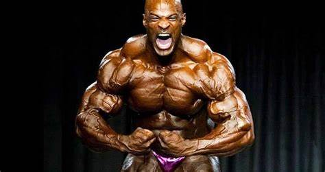

Porady dla początkujących
- Zacznij powoli – Nie rzucaj się na głęboką wodę. Zacznij od lekkich obciążeń i prostych ćwiczeń. Ważne jest, aby Twoje ciało miało czas na przyzwyczajenie się do nowej aktywności.
- Konsultacja z trenerem – Warto skorzystać z pomocy instruktora, który pokaże, jak prawidłowo wykonywać ćwiczenia i pomoże w ustaleniu planu treningowego.
- Rozgrzewka i rozciąganie – Przed każdym treningiem zrób rozgrzewkę, aby uniknąć kontuzji. Po treningu poświęć czas na rozciąganie, które pomoże w regeneracji.
- Zróżnicowany plan treningowy – Uwzględnij różne grupy mięśniowe i rodzaje aktywności – siłowe, cardio i mobilność. Dzięki temu unikniesz monotonii.
- Odpowiednia dieta i nawodnienie – Ćwiczenia to tylko połowa sukcesu. Zadbaj o zrównoważone posiłki i regularne picie wody.
- Słuchaj swojego ciała – Jeśli coś boli lub czujesz się przemęczony, zrób przerwę. Regeneracja to klucz do efektywnych treningów.
- Wyznacz realistyczne cele – Nie oczekuj spektakularnych efektów od razu. Małe kroki prowadzą do wielkich zmian.
- Zapisuj swoje postępy – Notowanie rezultatów pomoże Ci śledzić rozwój i utrzymać motywację.
- Wyznacz cele Zastanów się, co chcesz osiągnąć. Cele powinny być realistyczne, mierzalne i podzielone na krótkoterminowe oraz długoterminowe. Przykład: Poprawa kondycji, zwiększenie siły lub redukcja masy ciała.
- Podziel plan na etapy – Rozbij swoje zadanie na mniejsze części, aby było łatwiejsze do zrealizowania.
- Ustal priorytety – Skup się najpierw na najważniejszych elementach, które prowadzą do Twojego celu.
- Dobierz odpowiednie zasoby – Zidentyfikuj, czego będziesz potrzebować: sprzęt, czas, wiedzę czy wsparcie specjalisty.
- Zaplanuj harmonogram – Określ, ile czasu możesz przeznaczyć na realizację planu i dostosuj go do swojego stylu życia.
- Monitoruj postępy – Regularnie zapisuj swoje osiągnięcia. To motywuje i pozwala dostosowywać plan w razie potrzeby.
- Uwzględnij regenerację – Plan musi być zrównoważony – pamiętaj o odpoczynku i regeneracji.
- Bądź elastyczny – Życie bywa nieprzewidywalne. Dostosuj swój plan, jeśli coś nie idzie zgodnie z założeniami, ale nie poddawaj się.
Siłownia to dla mnie coś więcej niż miejsce do ćwiczeń 🏋️♂️.
To pasja, która pozwala mi pokonywać swoje własne granice 🏆 i odkrywać, jak wiele jestem w stanie osiągnąć 💪.
Każdy trening to okazja do pracy nad sobą – zarówno fizycznie 🏋️, jak i psychicznie 🧠.
Uwielbiam uczucie, które pojawia się, gdy widzę postępy 📈, czy to podniesienie większego ciężaru, czy poprawa kondycji 🏃♂️.
To nie tylko praca nad sylwetką, ale też ogromny zastrzyk energii ⚡ i satysfakcji 😊.
Atmosfera na siłowni 💪 i ludzie, którzy mają podobne cele 👥, dodają motywacji i sprawiają, że czuję się częścią inspirującej społeczności 🌟.
Lubię również planować swoje treningi 📋, wyznaczać cele 🎯 i obserwować, jak z każdym krokiem zbliżam się do ich realizacji 🚀.
Dla mnie siłownia to miejsce, gdzie nie tylko dbam o swoje ciało 🏋️♀️, ale też rozwijam ducha ✨, a ta harmonia daje mi niezwykłą radość 🥰.
